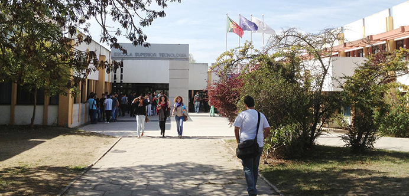

O Instituto Politécnico de Setúbal, promove muitas vezes seminários e workshops tanto na dentro da instituição como fora sobre a sustentabilidade.
Numa perspetiva de reflexão com vista à ação, são contemplados vários momentos de debate e de Inovação e Sustentabilidade pelo IPS, tendo
como matéria-prima as várias atividades de investigação que o IPS vem desenvolvendo como contributo para cidades mais inteligentes e amigas do ambiente.
